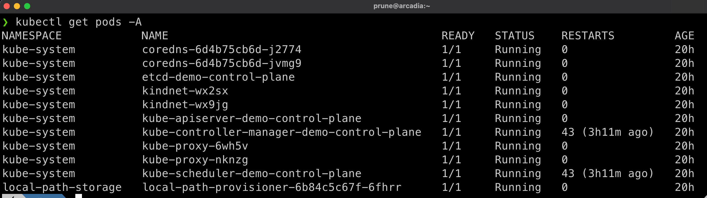
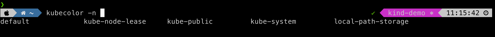
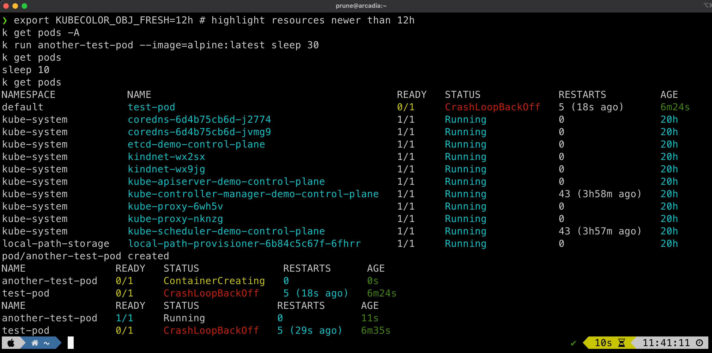

kubecolor¶
As said on the project's website: Colorize your kubectl output
Note
The kubecolor project, originally maintained in repo https://github.com/hidetatz/kubecolor has been supersedes by https://github.com/kubecolor/kubecolor.
The previous maintainer wasn't answering to any bug/question and wasn't working on it anymore.
Prune is now the maintainer of Kubecolor and is looking for other maintainers to help support it. Reach to Prune or open an issue if you want to enroll as a maintainer or report an issue.
Kubecolor in action¶
When using plain kubectl, everything is just grey (depends on your theme):

This is not really easy to read, and it's even worse when you have tons of outputs...
Then enters Kubecolor:

This new version also support the coloring for kubectl ctx and kubectl ns commands, along highlighting the new versus old resources with a user-customized duration. Set variable KUBECOLOR_OBJ_FRESH to a h, m or s duration.
Install¶
configuration¶
Usually you'll also replace all your kubectl commands by kubecolor.
Edit your .zshrc and add:
alias k=kubecolor
compdef kubecolor=kubectl # only needed for zsh
export KUBECOLOR_OBJ_FRESH=12h # highlight resources newer than 12h
If you are using the PowerLevel10k theme for ZSH, edit the line defining POWERLEVEL9K_KUBECONTEXT_SHOW_ON_COMMAND in file ~/.p10k.zsh to add kubecolor so it behave as kubectl:
kubecolor now behave the same as kubectl, with dynamic-prompt and completions:

Note
We alias kubectl to call kubecolor. This is needed to keep all the other short kubectl aliases to work.
In theory, kubecolor does not add colours when the output is not a terminal (when you pipe the command into another command).
If you see this behaviour failing, please open an issue and force kubecolor to output plain text with --plain
Demo¶
export KUBECOLOR_OBJ_FRESH=12h # highlight resources newer than 12h
k get pods -A
k run another-test-pod --image=alpine:latest sleep 30
k get pods
sleep 10
k get pods

Next¶
Continue to Kubectl Extensions